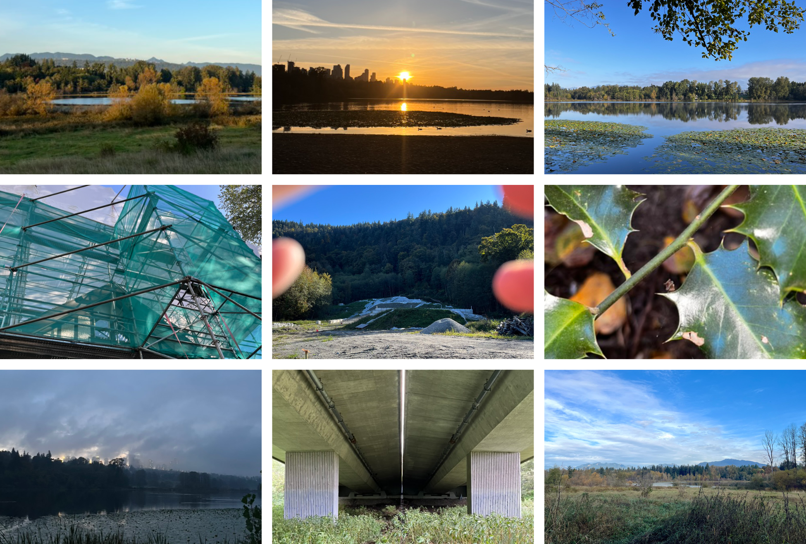
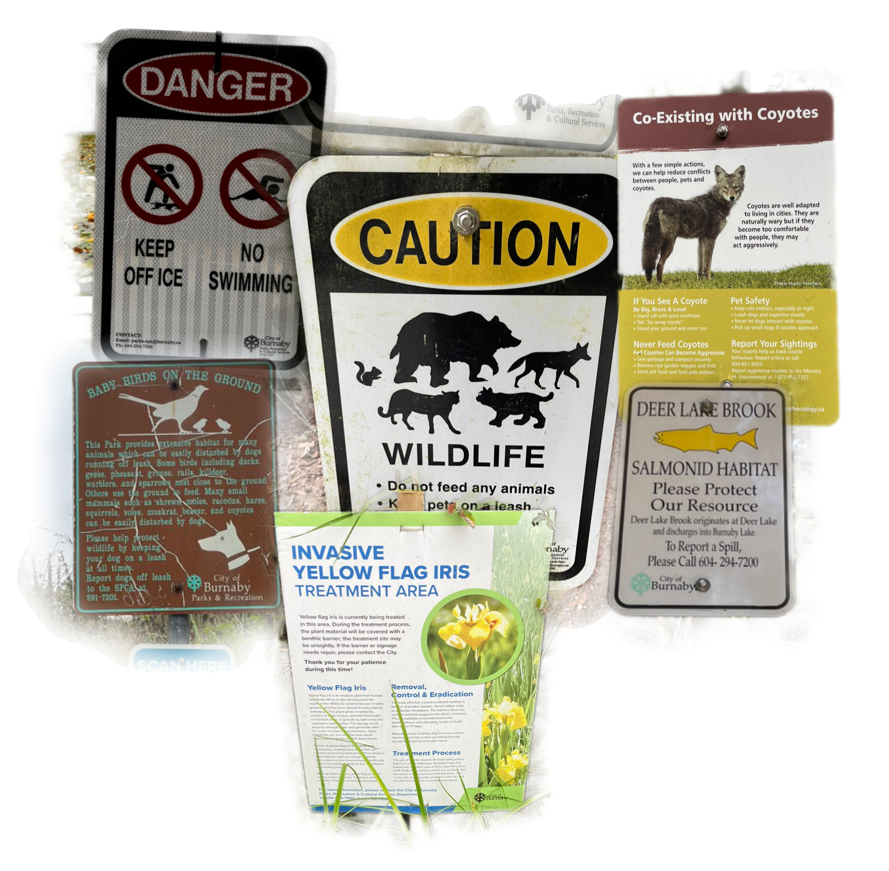

Deer Lake

2025-2026, performances sonores contextuelles, lectures-performances, musique électronique en direct et archives documentaires
DEER LAKE
28 septembre
Je suis atterri ici il y a quelques jours, et le matin du 18 septembre, j'entamais ma première marche autour de Deer Lake. En posant mes premiers pas, je ne connaissais rien de ses paysages, ni de son histoire, ou de ses cours d'eau. J'allais rapidement découvrir une faune et une flore sauvage, cernées de sentiers et balisées par de nombreux panneaux annonçant la présence des ours, de certaines plantes, ou racontant l'histoire locale. Il me faudrait encore plusieurs promenades pour bien commencer à cerner le contexte.
Je voudrais débuter un cours résumé de ce que j'ai appris du lieu et de son écologie. Cela me permettra de décrire les sentiments liés à une posture, celle d'un artiste étranger au lieu, à la fois observateur et acteur, incongru, participant ou même nuisible.
Qu'est-ce que les relations qui trament Deer Lake ont à m'apprendre sur le monde, mon monde, et sur ma position dans celui-ci ? Que puis-je prétendre faire dans un lieu qui m'est fondamentalement inconnu ?
Eaux - 1er octobre
Deer Lake est situé au creux d'une vallée, au coeur de ce qui est aujourd'hui la ville de Burnaby, en banlieue de Vancouver. C'est autour d'ici que l'acoustic ecology a vu le jour dans les années 1960 et 1970.
Le lac est relié au Burnaby Lake, plus grand, situé à son nord-est. Par la topographie du lieu, les deux lacs sont les points de rencontre de multiples ruisseaux s'écoulant des collines environnantes, et affluant vers les rivières qui se jettent dans le fleuve Fraser, puis dans l'océan.
Mon premier tour du lac m'a offert la beauté des rivages, des zones humides et marécageuses, mais ce sont les ruisseaux qui retiennent surtout mon attention. Chaque promenade promet d'entendre leur murmure, de constater la variation de leur débit les jours de pluie. Le ruisseau de la deuxième plage, qui coule depuis la colline sud du lac, s'élance sur plusieurs petites chutes. Un sentier le longe en grimpant dans la forêt, où l'on peut contempler le creux dans lequel il s'écoule.
D'autres affluents restent cachés à la vue, mais, en marchant les rues et les escaliers qui grimpent vers le sud, on peut percevoir le son de l'eau s'écouler sous le sol, à travers les bouches d'égout.
Beaver Pond, au nord-ouest, sert de bassin de filtration pour les déchets ruisselant depuis Canada Way, un boulevard qui traverse le parc par un pont et qui le longe vers le nord. Toute l'eau de la région se rassemble dans ce lac.
L'eau de Deer Lake lui confère une identité singulière, lorsqu'on admire son paysage, sa surface, son étendue. En considérant plus attentivement ses cours d'eau, il devient réseau, multiple, vivant, lié à tout un monde, à la fois étendu géographiquement, et rattaché au ciel des pluies.
Plantes - 3 octobre
Dès ma première promenade, je remarque aussi la diversité de la flore de Deer Lake. Wetland, meadowland, cet environnement précieux et protégé foisonne d'une végétation variée. Ce jour-là, je photographie un instant les feuilles et fleurs de différents spécimens afin de les identifier plus tard.
Nommer le monde qui nous entoure est un outil puissant pour le connaître. En m'attardant à chaque plante, de formes et de couleurs variées, je les inscris dans ma connaissance du lieu. J'entre en relation avec elles.
En lisant les affiches et en identifiant plus tard ces différentes plantes, j'apprends qu'elles ne sont pas toutes considérées de manière égale. Une grande distinction s'opère entre plantes indigènes et envahissantes. Les premières, à risque d'extinctions, sont protégées. Les autres sont vouées à l'éradication.
Parmi la laîche, les spirées, le houx, la balsamine, et les impatientes figurent à la fois plantes envahissantes et indigènes. Les plantes envahissantes, emportées de loin pour agrémenter les jardins coloniaux, se répandent au détriment des plantes indigènes, qui elles sont nécessaires à l'équilibre de l'écosystème local. Elles consomment espace et ressources des plantes indigènes et tranquillement les repoussent, prenant le dessus en se propageant. Or, les plantes indigènes se sont taillé une place à travers des milliers d'années d'évolution, bénéficiant au sol, à l'air et à la faune. En prenant leur place, les plantes envahissantes déséquilibrent l'ordre environnemental. Ainsi, des plantes à fleurs comme l'iris des marais sont éradiquées, étouffées sous des bâches noires couvrant les pans de terres où elles se propagent. L'absence de lumière et d'oxygène mène à leur anéantissement. Les arracher risquerait de laisser en terre des morceaux de racine qui reprendraient vie.
Supprimer la menace des plantes envahissantes semble d'une nécessité logique. Mais la situation offre un paradoxe complexe. D'abord, ces plantes ont été menées ici par la volonté humaine. Maintenant, elles prospèrent, comme elles savent simplement le faire. Le mouvement migratoire des plantes entraîne une transformation du paysage. Quelle morale peut-on adresser à leur endroit ? Les nouvelles configurations produites par ces plantes correspondent à un environnement en mutation.
Mais surtout, il est difficile d'ignorer le parallèle qui existe entre la présence des plantes envahissantes et l'histoire de la colonisation. Les mots, encore une fois, ont le pouvoir de manier notre manière de concevoir le monde et de déterminer nos comportements.
Faune - 7 octobre
Partout dans et autour du parc, des panneaux affichent la présence d'une faune sauvage et intime à la prudence. Deer Lake est un parc où la nature est relativement préservée du contact humain. Une oasis, car partout autour poussent les tours d'habitation. De ce fait, les animaux sont entraînés en ce lieu central, petite vallée verdoyante et humide, entourée du béton et de la circulation routière.

La nuit, j'entends les barn owls hululer et les coyotes aboyer au loin. Le matin, je m'éveille au son du grattement des écureuils et des corbeaux sur le toit de la maison. Dehors, ceux-ci s'affairent et se pourchassent sans relâche, produisant un spectacle chaotique où la trajectoire fulgurante des vols s'associe aux bousculades dans les arbres, d'où tombent branches et fruits. Le saumon, depuis quelques années, remontre à nouveau de la Fraser jusqu'aux lacs. Les efforts de préservation lui on valut de retrouver son habitat ancestral. L'espace réservé à la promenade est balisé à travers les nombreux sentiers. Ici, la présence humaine est imposante autant que contrôlée et étrangère à une population animale diversifiée, impossible à ignorer. Démographie Par ailleurs, Burnaby est une ville multiculturelle, cosmopolite. Selon un panneau trouvé au Village Museum, 50 % de sa population serait immigrante. Mais je ne comprends pas qui fait partie de ces statistiques. La municipalité ayant été incorporée en 1892, la population de Colombie-Britannique comptait déjà, si ma compréhension est bonne, des descendants de colons européens, ainsi que les communautés venues d'Asie, notamment de Chine, d'Inde et du Japon. Bien avant, le territoire était déjà occupé par les nations Musqueam, Squamish et Tsleil-Waututh. Étranger - 13 octobre Ici, comme ailleurs sur le territoire, je suis étranger. Agir demande respect et écoute. Je ne peux, en tant qu'humain, souhaiter mon propre effacement, ni la disparition des conditions de ma vie bonne. Mais je peux tenter de ne pas nuire davantage, de laisser pousser sans piétiner, de reconnaître les présences autres. Maintenant, en quoi cela affecte-t-il ma volonté d'explorer, de créer, de comprendre et de participer au monde qui m'entoure ? Créer signifie peut-être autre chose que de produire au sens matériel. Plutôt que de produire davantage, dans une accumulation de matière, de signes et de bruit persistant, il est sans doute possible de se produire, c'est-à-dire d'entrer dans un processus dynamique, vivant et continu de traduction du sens, de l'expérience. Il s'agit d'une participation douce, donc, d'une simple manière d'être-là, de faire résonner, comme un vase creux, mais dont la forme particulière resterait flexible, se transformant face à ce qui existe, ce qui se déroule, ce qui advient. Assembler, faire résonner des éléments avec lesquels j'entre en relation, sans extraire, surproduire, consumer. De quelle manière puis-je adopter cette posture ici, à Deer Lake, dans le respect de ce qui m'est étranger et de ma position de visiteur ? Vulnérable - 14 octobre Une direction se dessine à partir d'une posture de vulnérabilité, celle-là même dont parle Morizot lorsqu'il invite à reconnaître nos vulnérabilités mutuelles face au vivant autre-qu'humain ; cette même vulnérabilité dont parle Springgay lorsqu'elle décrit une posture humble et participante, en opposition à celle du flâneur, observateur externe jouissant du privilège de la sécurité, de la distance, de l'invisibilité. En adoptant dans ma recherche une posture de vulnérabilité, il me sera peut-être possible de m'inscrire dans cet environnement sans imposer ma présence. Se montrer vulnérable signifie : se mettre à découvert, se mettre à nu, s'ouvrir, baisser les armes, montrer ses faiblesses. C'est, bien entendu, une position d'inconfortable, que l'on cherche à éviter. Mais pour plusieurs, humains et non-humains, cette vulnérabilité est une condition permanente. En réalité, nous sommes tous plus ou moins vulnérables en tant que vivants. L'écoute et la patience renforcent la solidarité. La vulnérabilité est souvent interprétée comme faiblesse, alors pourtant qu'assumer une position de vulnérabilité demande courage, confiance et résilience. La posture de vulnérabilité, au contours flous, me semble la plus appropriée dans un contexte de création sur le terrain où il est question de mise en relation. Dans le parc, je me découvre, je me montre en action. Lorsque j'explore, mes gestes sont clairement dévoilés pour laisser connaître ma présence. C'est, à mon avis, un premier pas vers une forme de vulnérabilité, ou du moins vers une forme de transparence, pour que la création ne tombe pas dans l'intervention, la rupture ou la confrontation. Ma présence éphémère dans le parc cherche à traduire un état. Elle filtre, traduit, émet du sens à partir de l'acte de création sur le terrain, à la fois pensé de manière éthique et esthétique. Éthique, dans l'approche de vulnérabilité qui prend en considération sa position dans un environnement étranger. Esthétique, en ce sens où la création dégage un style, une manière d'être particulière, qui ouvre alors à une façon d'agir et de percevoir le monde, issue de la rencontre avec le lieu. Sans déterminer d'avance un sens ou un résultat, je réfléchis à la forme, la couleur, le style de l'œuvre, qui agira comme un filtre. La performance agit comme un prisme de verre, dont la forme particulière et unique dépend de la manière d'être et d'agir. La forme, le style, filtrent un sens préexistant, et le transforme en un sens nouveau. La figure du prisme admet aussi la fragilité, la possibilité d'être détruite, transformée, usée avec le temps et les usages. Une œuvre jugée précieuse, comme un prisme précieux, demanderait un soin, constant pour sa préservation. Et bien qu'il y ait nécessité à accumuler les objets émetteurs de sens, l'éphémérité de l'œuvre est toute aussi valable, dans sa capacité à se dissoudre et à se recomposer ailleurs. Performance - 17 octobre Apprendre à connaitre Deer Lake, à la fois par l'expérience sensible de la marche et par l'apprentissage de son histoire écrite et archivée, m'a mené à découvrir un peu mieux ma propre position en présence de ce lieu, et à comprendre le sens d'une posture de vulnérabilité. Mettre en œuvre cette posture demeure un problème délicat, qui demande une finesse dans l'exécution, et une réflexion sur l'intérêt et la légitimité réelle d'intervenir. Qu'est-ce que j'ai à offrir ? Quelques factures jouent en la faveur d'une intervention sonore. D'abord, le son est impermanent, éphémère, et ce statut permet d'admettre qu'une intervention sonore ne laisse pas de trace prolongée dans le lieu. En ce qui a trait à une conception traditionnelle de la création artistique, cela s'oppose à la production d'une œuvre ayant une capacité à perdurer, à se répéter, à se répandre. L'approche écologique reste disposée à la création vue comme processus, qui ne transforme pas le lieu de manière durable, mais qui transforme la perception et les relations. Ensuite, le son peut être considéré comme médium de la présence, où l'environnement sonore englobe chaque élément en un tout, lié par la vibration et le mouvement de ce qui se trouve alentour. Pour cette raison, la performance sonore ou musicale contextuelle est un acte relationnel. La toile de l'araignée flotte au vent et s'accroche au hasard. Cela dit, le son détient toujours le potentiel de déranger. Son volume, son spectre, peuvent même agresser, ou envahir, ne serait-ce que momentanément. En ce sens, la performance sonore spontanée présente le défi de déterminer l'espace sonore adéquat, qui n'envahisse pas le lieu, mais qui y insère une présence, soit celle des artistes et des participants, tout en permettant aux présences autres à s'insérer. Un autre défi repose dans l'enjeu de la représentation. Comment la création sonore peut-elle s'inscrire dans le lieu sans chercher à imiter, à reproduire ? Quelle esthétique de la vulnérabilité pourrait répondre à un besoin d'entrer en relation avec le lieu, sans l'atteindre ? Cette vulnérabilité demande temps, espace, silence et prudence. Enfin, alors que certaines relations mûrissent avec le temps, d'autres résident dans le moment de la rencontre. Similairement, certaines œuvres musicales nécessitent le temps long de la composition, alors que d'autres émergent de la spontanéité et de l'improvisation. Temporalités étendues et instants d'intensité ; composer une œuvre, comme tisser une relation, implique la concentration du présent comme la perspective de la mémoire.